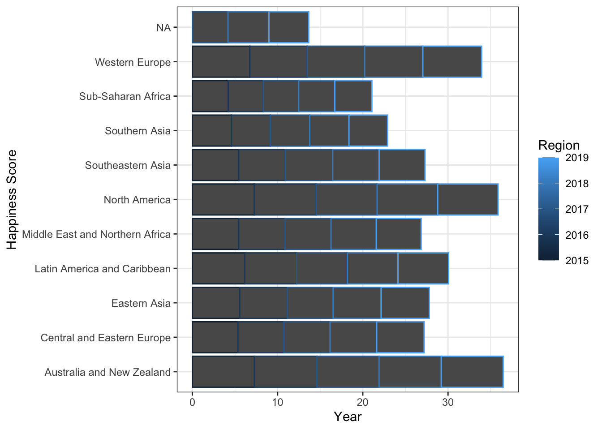
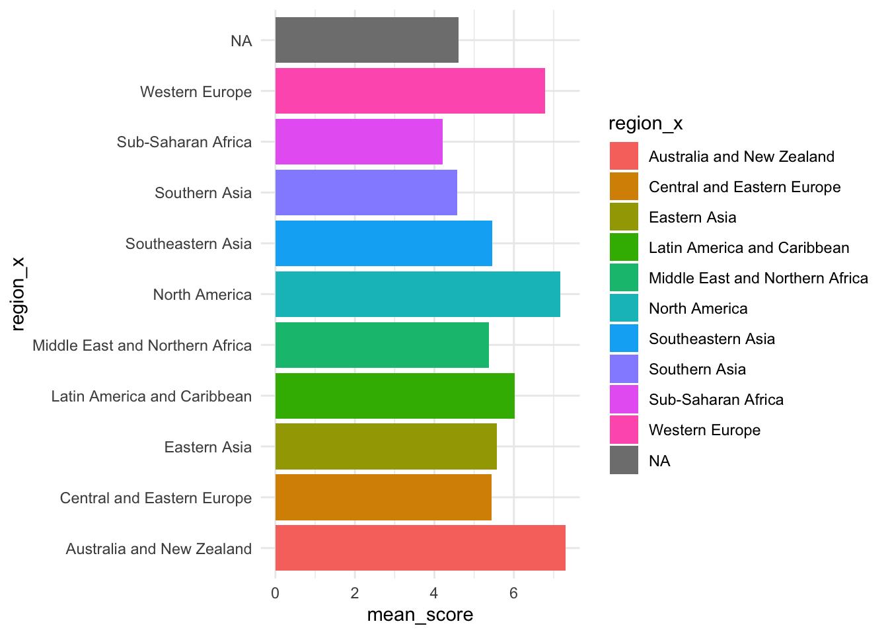

## Rows: 158 Columns: 12
## ── Column specification ────────────────────────────────────────────────────────────────────────────────────
## Delimiter: ","
## chr (2): Country, Region
## dbl (10): Happiness Rank, Happiness Score, Standard Error, Economy (GDP per Capita), Family, Health (Lif...
##
## ℹ Use `spec()` to retrieve the full column specification for this data.
## ℹ Specify the column types or set `show_col_types = FALSE` to quiet this message.
## Rows: 157 Columns: 13
## ── Column specification ────────────────────────────────────────────────────────────────────────────────────
## Delimiter: ","
## chr (2): Country, Region
## dbl (11): Happiness Rank, Happiness Score, Lower Confidence Interval, Upper Confidence Interval, Economy...
##
## ℹ Use `spec()` to retrieve the full column specification for this data.
## ℹ Specify the column types or set `show_col_types = FALSE` to quiet this message.
## Rows: 155 Columns: 12
## ── Column specification ────────────────────────────────────────────────────────────────────────────────────
## Delimiter: ","
## chr (1): Country
## dbl (11): Happiness.Rank, Happiness.Score, Whisker.high, Whisker.low, Economy..GDP.per.Capita., Family, ...
##
## ℹ Use `spec()` to retrieve the full column specification for this data.
## ℹ Specify the column types or set `show_col_types = FALSE` to quiet this message.
## Rows: 156 Columns: 9
## ── Column specification ────────────────────────────────────────────────────────────────────────────────────
## Delimiter: ","
## chr (2): Country or region, Perceptions of corruption
## dbl (7): Overall rank, Score, GDP per capita, Social support, Healthy life expectancy, Freedom to make l...
##
## ℹ Use `spec()` to retrieve the full column specification for this data.
## ℹ Specify the column types or set `show_col_types = FALSE` to quiet this message.
## Rows: 156 Columns: 9
## ── Column specification ────────────────────────────────────────────────────────────────────────────────────
## Delimiter: ","
## chr (1): Country or region
## dbl (8): Overall rank, Score, GDP per capita, Social support, Healthy life expectancy, Freedom to make l...
##
## ℹ Use `spec()` to retrieve the full column specification for this data.
## ℹ Specify the column types or set `show_col_types = FALSE` to quiet this message.## Rows: 782
## Columns: 13
## $ Country <chr> "Switzerland", "Iceland", "Denmark", "Norway", "Canada", "Finland", "Netherlands", "S…
## $ Region <chr> "Western Europe", "Western Europe", "Western Europe", "Western Europe", "North Americ…
## $ H_rank <dbl> 1, 2, 3, 4, 5, 6, 7, 8, 9, 10, 11, 12, 13, 14, 15, 16, 17, 18, 19, 20, 21, 22, 23, 24…
## $ H_score <dbl> 7.587, 7.561, 7.527, 7.522, 7.427, 7.406, 7.378, 7.364, 7.286, 7.284, 7.278, 7.226, 7…
## $ SE <dbl> 0.03411, 0.04884, 0.03328, 0.03880, 0.03553, 0.03140, 0.02799, 0.03157, 0.03371, 0.04…
## $ GDP <dbl> 1.39651, 1.30232, 1.32548, 1.45900, 1.32629, 1.29025, 1.32944, 1.33171, 1.25018, 1.33…
## $ Family <dbl> 1.34951, 1.40223, 1.36058, 1.33095, 1.32261, 1.31826, 1.28017, 1.28907, 1.31967, 1.30…
## $ Health <dbl> 0.94143, 0.94784, 0.87464, 0.88521, 0.90563, 0.88911, 0.89284, 0.91087, 0.90837, 0.93…
## $ Freedom <dbl> 0.66557, 0.62877, 0.64938, 0.66973, 0.63297, 0.64169, 0.61576, 0.65980, 0.63938, 0.65…
## $ Trust <chr> "0.41978", "0.14145", "0.48357", "0.36503", "0.32957", "0.41372", "0.31814", "0.43844…
## $ Generosity <dbl> 0.29678, 0.43630, 0.34139, 0.34699, 0.45811, 0.23351, 0.47610, 0.36262, 0.47501, 0.43…
## $ dystopia_res <dbl> 2.51738, 2.70201, 2.49204, 2.46531, 2.45176, 2.61955, 2.46570, 2.37119, 2.26425, 2.26…
## $ Year <dbl> 2015, 2015, 2015, 2015, 2015, 2015, 2015, 2015, 2015, 2015, 2015, 2015, 2015, 2015, 2…## Rows: 227 Columns: 20
## ── Column specification ────────────────────────────────────────────────────────────────────────────────────
## Delimiter: ","
## chr (2): Country, Region
## dbl (17): Population, Area (sq. mi.), Pop. Density (per sq. mi.), Coastline (coast/area ratio), Net migr...
##
## ℹ Use `spec()` to retrieve the full column specification for this data.
## ℹ Specify the column types or set `show_col_types = FALSE` to quiet this message.I want to show how each region’s mean happiness score has trended over the 5 year period. Need to group by region and year and find the mean of each.
## `summarise()` has grouped output by 'region_x'. You can override using the `.groups` argument.

For creating my model, I wanted to take a deeper dive into the 3 variables I thought would be most influential.
model <- lm(h_score ~ gdp_per_capita + literacy_percent + infant_mortality_per_1000_births,
data = ch_alldat)
stargazer(model, type = "html", omit = c("Constant"))| Dependent variable: | |
| h_score | |
| gdp_per_capita | 0.0001*** |
| (0.00000) | |
| literacy_percent | 0.010*** |
| (0.002) | |
| infant_mortality_per_1000_births | -0.008*** |
| (0.001) | |
| Observations | 706 |
| R2 | 0.646 |
| Adjusted R2 | 0.645 |
| Residual Std. Error | 0.680 (df = 702) |
| F Statistic | 427.748*** (df = 3; 702) |
| Note: | p<0.1; p<0.05; p<0.01 |
These 3 variables seem to have the highest correlation with happiness scores. GDP per capita, literacy percent, and infant mortality rates do make sense that they would have a large effect on happiness.
From looking at this data, we can say that if a country wants to improve their citizens happiness, they should look to raise their gdp, improve their education system and improve their healthcare system. Obviously this is not surprising and is very difficult to do in poor countries.